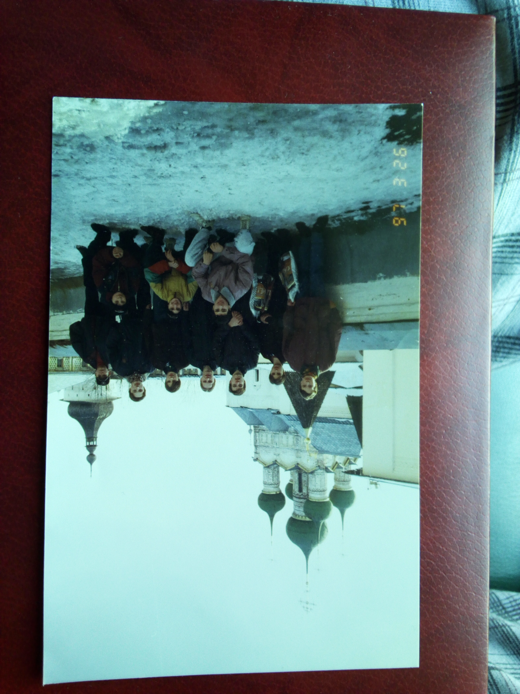
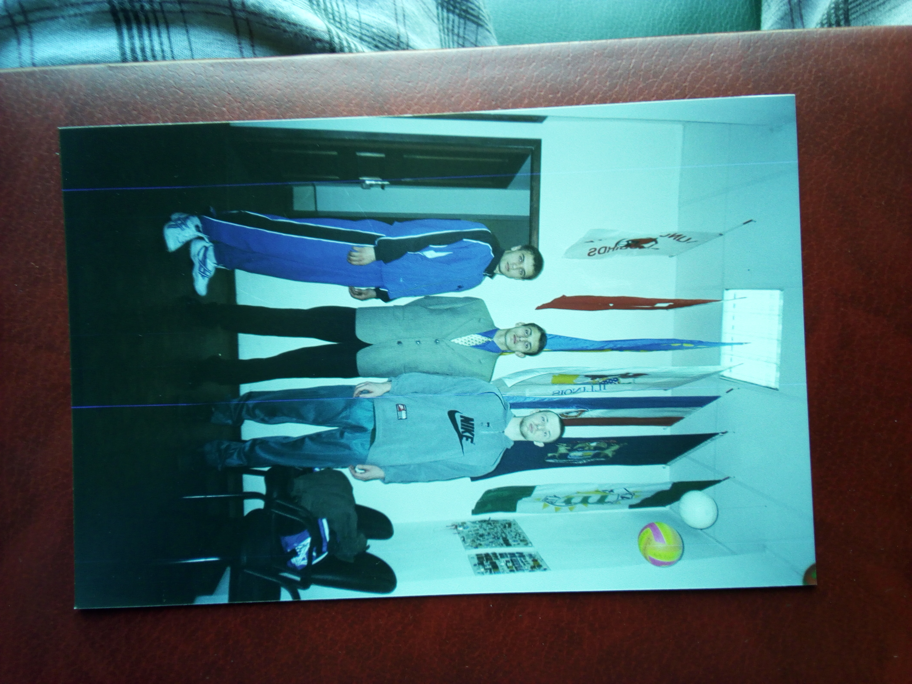
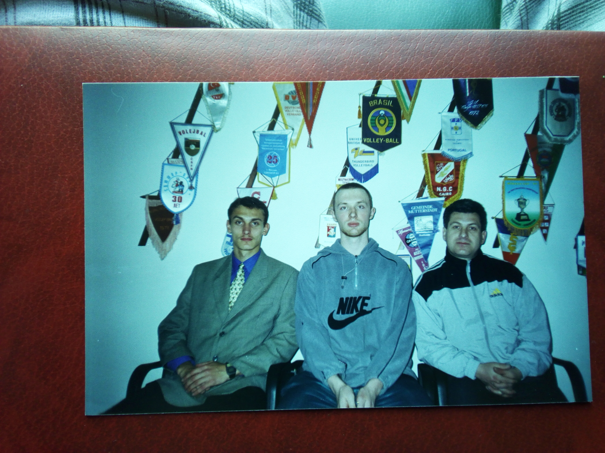

terrible environment including workers threatening me (last video)
https://www.youtube.com/playlist?list=PLOVM7lUFUWa_WiFs1TV8OnPMAGk1t3Jj8
the 786. People who were found and who knew about the situation and can confirm the harassment/crime if they
remember it and are honest.
- Evgeni Lapitski
- Evgeni Lapitski
- Evgeni Lapitski
- Вячеслав Иванов(Vyacheslav Ivanov)
- Зоя Филиппова(Zoya Filippova)
- Александр Михайлов(Alexander Mikhailov)
- Александр Трофимов(Alexander Trofimov)
- Сергей Сарыкин(Sergei Sarykin)
- Маленков Евгений(Malenkov Evgeny)
- Резников Илья(Reznikov Ilya)
- abandoned account
- Евгений Конягин(Evgeny Konyagin)
- Евгений Конягин(Evgeny Konyagin)
------bastards
- труфанов(Trufanov Anton)
- abandoned account
- vk.com active account, that's exactly him (Update 2024. Now account is private and photo blured, but in 2022 it was visible).
+
- facebook, same photos
- facebook second
- facebook third, empty, but with school
- facebook fourth, looks like it's his account too.
- похож на Наседкина(Nasedkin Yuri), but not sure if it's him
- perhaps (Sergey Mamontov), but the school is different, so there
is no certainty. He had a nervous tic on his left cheek and his left cheek often turned up.
- perhaps (Sergey Mamontov) too. Because of age, city, cheek little
bit turned up. But there, is no certainty.
the 894
- perhaps Жукова Ирина Олеговна(Zhukova Irina Olegovna), but not
sure. Biology teacher from school 894
Some photos from that time.
school 786 year 1995.

1- Сергей Иванов (Sergei Ivanov 02.03.1983).
2- Александр Алишин (Alexander Alishin 09.09.1983),
his father, a policeman, knew about what was happening.
Dastards the scoundrels did not attack or threaten him,
since they knew that his father was a policeman.
And his father told him, that it was none of his business,
since his son is fine and in general he works in another area.
3- Евгений Маленков (Evgeny Malenkov),
his mother complained to various authorities,
with zero result, after that, he transferred to another school
in the middle of the school year.
4- Павел Васин(Pavel Vasin 29.06.1983).
5- Илья Резников(Ilya Reznikov).
6- Михаил Мечтаев(Mikhail Mechtaev 14.04.1983).
7- Дмитрий Першуткин(Dmitry Pershutkin 12.03.1983).
8- Анастасия Анашкина(Anastasia Anashkina),
as i know, she is Alexander Mikhailov's wife.
She saw me being attacked by a flock,
before a history lesson and other episodes of threatening etc.
school 894 year 2000(my photo is old, explained bottom).

1- Гуляков Игорь Александрович (Gulyakov Igor Alexandrovich), physical education teacher
2- Жукова Ирина Олеговна (Zhukova Irina Olegovna), biology teacher
3- Сергей Иванов(Sergei Ivanov) - after the characters (1) and (2) conspired and publicly humiliated my
dignity by deliberately worsening the result of my physical education exam in grade 11 (after that they handed a medal
to another student and many noticed this crime, including one teacher who is not on this a photo). I decided not to
take a fresh photo for this group photo. I also decided not to attend prom after finishing 11th grade. They took
revenge on me because I did not want to fulfill their personal desires that go beyond educational activities. They
failed to use me and they harmed me in collusion. In my opinion, this was the idea of character (2).
As a result, my photo (3) is old, about 1996-1997. This photo was given to them by my genetic mother. In year
1998, in beginning of summer, I cut my hair bald, with a trimmer. Some of photos from 1998+ are shown below.
school 786 year 1998.

1- Sergei Ivanov
2- Nasedkin Yuri - he eats an apple. I remember very well that moment when we return to school after we took the
photo. The two bastards were inside the door and (3) were smoking a cigarette.
3- Trufanov Anton
1997-3-29

1- Evgeny Konyagin (Конягин Евгений Игоревич) - the coach
2- Alexander Alishin (Александр Алишин)
3- Sergei Ivanov (Сергей Иванов)

1- Sergei Ivanov
2- Anatoly Khomenko (Анатолий Хоменко) - father of one of the team players. Later(before the next stage of the
competition), Evgeny Konyagin tried to borrow
money from Anatoly Khomenko in order to take his wife with the team to Kislovodsk (competitions were held there), to a
resort, to relax. They didn't lend him money. A little later, Evgeny Konyagin suddenly had money, but one of the
players of the main team had to stay at home and miss the competition (Russian championship among youths). Instead,
another went to the competition. It was a weak player, in whose house a new invited player from another city lived for
free, for several weeks. Previously, money was allocated for the living of this player. It is not difficult to draw
conclusions.
3- Evgeny Konyagin - the photographer, his jacket on the photo.
1997-3-26

1- Sergei Ivanov
2- Evgeny Malenkov
3- Dmitry Pershutkin (Дмитрий Першуткин) - a player of the main squad who was not taken to the next stage of the
competition (description above). His family was a single mother and brother Denis.
4- Evgeny Konyagin
5- a weak player from the bench who went to the competition instead of (3). The number of places was limited and
they did not plan to take him to the semi-finals, but then everything changed (description above).
1997-3-26--2

2001-spring

1- Sergei Ivanov
2001-spring--2

2001-spring--3

2001-spring--4

Fake smiles. Alexander Alishin in blue suit
2001-spring--5

Sergei Ivanov in center. With coaches.
1995

1- Evgeny Konyagin
2- Alexander Alishin
3- Sergei Ivanov